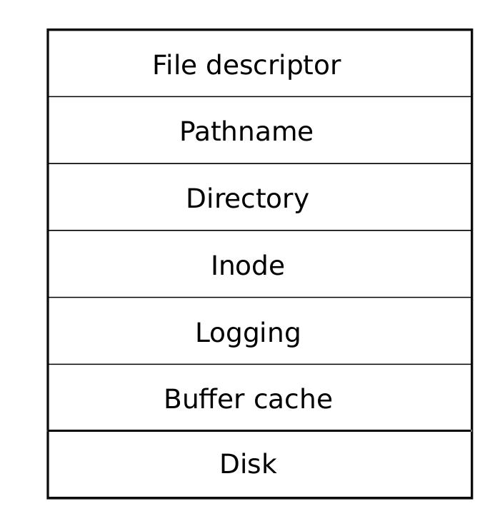
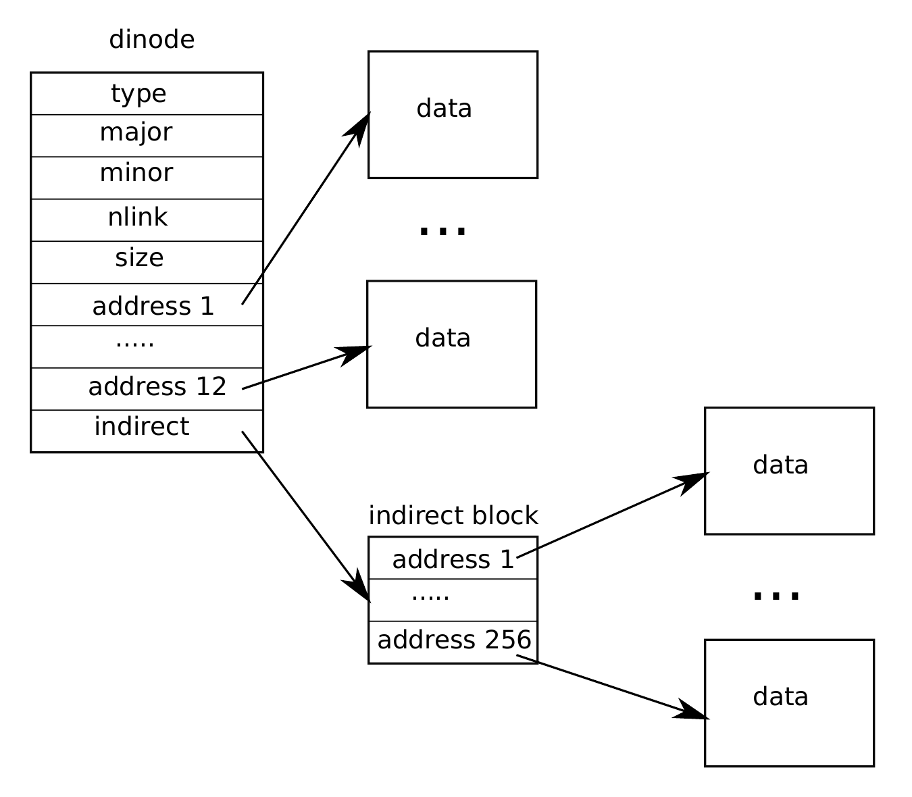

第 10 章 文件系统
文件系统的目的是组织并存储数据。文件系统通常支持用户和应用之间共享数据，也支持持久性，使数据在重启后仍然可用。
xv6 文件系统提供类 Unix 的文件、目录和路径名（见第 1 章），并把数据存储在 virtio 磁盘上以实现持久化。文件系统需要面对几个挑战：
- 文件系统需要磁盘上的数据结构来表示带名字的目录和文件树，记录保存每个文件内容的块的身份，并记录磁盘上哪些区域是空闲的。
- 文件系统必须支持崩溃恢复。也就是说，如果发生崩溃（例如断电），文件系统在重启后仍必须正确工作。风险在于崩溃可能中断一系列更新，让磁盘上的数据结构处于不一致状态（例如某个块既被文件使用，又被标记为空闲）。
- 不同进程可能同时操作文件系统，因此文件系统代码必须协调它们，以维持不变量。
- 访问磁盘比访问内存慢几个数量级，因此文件系统必须在内存中缓存常用块。
本章余下部分解释 xv6 如何处理这些挑战。
10.1 概览
xv6 文件系统实现组织成七层，如图 10.1所示。磁盘层在 virtio 硬盘上读写块。缓冲缓存层缓存磁盘块并同步对它们的访问，确保同一时刻只有一个内核进程能修改某个特定块中保存的数据。日志层允许更高层把对多个块的更新包装成一个事务，并保证面对崩溃时这些块被原子地更新（也就是说，要么全部更新，要么都不更新）。inode 层提供单个文件，每个文件表示为一个带唯一 i-number 的 inode，并有若干块保存文件数据。目录层把每个目录实现为一种特殊 inode，其内容是一串目录项，每个目录项包含一个文件名和 i-number。路径名层提供像 /usr/rtm/xv6/fs.c 这样的层级路径名，并通过递归查找解析它们。文件描述符层用文件系统接口抽象许多 Unix 资源（例如管道、设备、文件等），从而简化应用程序员的工作。

传统上，磁盘硬件把磁盘上的数据表现为编号的 512 字节块序列（也称为扇区）：扇区 0 是最开始的 512 字节，扇区 1 是接下来的 512 字节，依此类推。操作系统用于文件系统的块大小可能不同于磁盘使用的扇区大小，但通常块大小是扇区大小的倍数。xv6 把已经读入内存的块副本保存在 struct buf 类型的对象中 (3900)。这个结构中保存的数据有时与磁盘不同步：它可能尚未从磁盘读入（磁盘正在处理，但还没有返回扇区内容），也可能已被软件更新但尚未写回磁盘。
文件系统必须规划 inode 和内容块在磁盘上的存放位置。为此，xv6 把磁盘划分为若干区域，如图 10.2所示。文件系统不使用块 0（它保存引导扇区）。块 1 称为超级块；它包含文件系统元数据（文件系统大小，以块为单位；数据块数量；inode 数量；以及日志中的块数）。从块 2 开始的块保存日志。日志之后是 inode 区，每个块中有多个 inode。再之后是位图块，用于跟踪哪些数据块正在使用。剩余块是数据块；每个数据块要么在位图块中标记为空闲，要么保存某个文件或目录的内容。超级块由一个名为 mkfs 的独立程序填充，该程序构建初始文件系统。
本章余下部分会从缓冲缓存开始，讨论每一层。请留意一些场景：底层选择良好的抽象如何让高层设计更容易。
10.2 缓冲缓存层
缓冲缓存有两项工作：第一，同步对磁盘块的访问，以确保一个块在内存中只有一份副本，并且同一时刻只有一个内核线程使用这份副本；第二，缓存常用块，使它们不必从慢速磁盘重新读取。代码位于 bio.c。
缓冲缓存导出的主要接口由 bread 和 bwrite 组成；前者取得一个包含某个块副本的 buf，调用者可以在内存中读取或修改它，后者把修改过的缓冲区写到磁盘上相应块。内核线程用完缓冲区后，必须调用 brelse 释放它。缓冲缓存使用每缓冲区一把睡眠锁，确保同一时刻只有一个线程使用每个缓冲区（也就是每个磁盘块）；bread 返回一个已加锁的缓冲区，brelse 释放该锁。
再回到缓冲缓存本身。缓冲缓存拥有固定数量的缓冲区用于保存磁盘块，这意味着如果文件系统请求的块尚未在缓存中，缓冲缓存必须回收当前保存其他块的某个缓冲区。缓冲缓存会为新块回收最近最少使用的缓冲区。这里的假设是，最近最少使用的缓冲区也是近期最不可能再次使用的缓冲区。
10.3 代码：缓冲缓存
缓冲缓存是一个缓冲区双向链表。函数 binit 由 main 调用 (1176)，它用静态数组 buf 中的 NBUF 个缓冲区初始化该链表 (4292-4301)。对缓冲缓存的其他所有访问都通过 bcache.head 引用这个链表，而不是直接使用 buf 数组。
缓冲区有两个相关状态字段。字段 valid 表示缓冲区包含该块的副本。字段 disk 表示缓冲区内容已经交给磁盘，而磁盘可能会改变缓冲区（例如把从磁盘读出的数据写入 data）。
bread (4352) 调用 bget 为给定扇区取得缓冲区 (4356)。如果缓冲区需要从磁盘读取，bread 会先调用 virtio_disk_rw 完成读取，再返回缓冲区。
bget (4308) 扫描缓冲区链表，查找设备号和扇区号匹配的缓冲区 (4314-4322)。如果存在这样的缓冲区，bget 获取该缓冲区的睡眠锁，然后返回这个已加锁缓冲区。
如果给定扇区没有缓存缓冲区，bget 必须创建一个，可能会复用一个先前保存不同扇区的缓冲区。它第二次扫描缓冲区链表，寻找一个未使用的缓冲区（b->refcnt = 0）；任何这样的缓冲区都可以使用。bget 修改缓冲区元数据以记录新的设备号和扇区号，并获取它的睡眠锁。注意，赋值 b->valid = 0 确保 bread 会从磁盘读取块数据，而不是错误地使用缓冲区先前的内容。
每个磁盘扇区最多只有一个缓存缓冲区非常重要，这既是为了确保读者能看到写入，也是因为文件系统用缓冲区上的锁进行同步。bget 通过从第一轮循环检查块是否已缓存，到第二轮循环声明该块现在已缓存（通过设置 dev、blockno 和 refcnt），持续持有 bcache.lock，从而保证这个不变量。这使得检查某块是否存在，以及在不存在时指定某个缓冲区保存该块，成为原子操作。
bget 在 bcache.lock 临界区之外获取缓冲区的睡眠锁是安全的，因为非零的 b->refcnt 会防止这个缓冲区被复用于另一个磁盘块。睡眠锁保护对块缓冲内容的读写，而 bcache.lock 保护关于哪些块已缓存的信息。
如果所有缓冲区都正忙，说明有过多进程同时执行文件系统调用；bget 会 panic。更温和的回应可以是睡眠直到某个缓冲区空闲，不过那样可能引入死锁。
一旦 bread 读完磁盘（如有必要）并把缓冲区返回给调用者，调用者就独占该缓冲区，可以读取或写入其数据字节。如果调用者修改了缓冲区，必须在释放缓冲区前调用 bwrite 把改变后的数据写回磁盘。bwrite (4366) 调用 virtio_disk_rw 与磁盘硬件通信。
调用者用完缓冲区后，必须调用 brelse 释放它。（brelse 这个名字是 b-release 的缩写，比较晦涩但值得记住：它源自 Unix，也被 BSD、Linux 和 Solaris 使用。）brelse (4376) 释放睡眠锁，并把缓冲区移动到链表前端 (4387-4392)。移动缓冲区使链表按缓冲区最近使用（即释放）的时间排序：链表第一个缓冲区是最近使用的，最后一个是最近最少使用的。bget 中的两个循环利用了这一点：查找已有缓冲区的扫描在最坏情况下必须处理整个链表，但优先检查最近使用的缓冲区（从 bcache.head 开始沿 next 指针前进）会在引用局部性良好时减少扫描时间。选择要复用缓冲区的扫描则反向扫描（沿 prev 指针），从而选择最近最少使用的缓冲区。
10.4 日志层
文件系统设计中最有趣的问题之一是崩溃恢复。这个问题出现的原因是，许多文件系统操作涉及多次磁盘写入，而在只完成部分写入后发生崩溃，可能让磁盘上的文件系统处于不一致状态。例如，假设在截断文件（把文件长度设为零并释放其内容块）期间发生崩溃。取决于磁盘写入顺序，崩溃可能留下一个仍引用某个内容块的 inode，但该内容块已被标记为空闲；也可能留下一个已分配但没人引用的内容块。
后一种情况相对无害，但引用已释放块的 inode 很可能在重启后造成严重问题。重启后，内核可能把这个块分配给另一个文件，于是两个不同文件会无意中指向同一个块。如果 xv6 支持多个用户，这种情况可能成为安全问题，因为旧文件的拥有者将能读写属于另一个用户的新文件中的块。
xv6 用一种简单的日志机制解决文件系统操作期间崩溃的问题。xv6 系统调用不会直接写磁盘上的文件系统数据结构。相反，它会在磁盘上的日志中放入自己希望执行的所有磁盘写入的描述。当系统调用记录完所有写入后，它会向磁盘写一个特殊的提交记录，表示日志包含一个完整操作。此时系统调用把这些写入复制到磁盘上的文件系统数据结构。写入完成后，系统调用擦除磁盘上的日志。
如果系统崩溃并重启，文件系统代码会在运行任何进程之前按如下方式恢复。如果日志被标记为包含一个完整操作，恢复代码就把这些写入复制到它们在磁盘文件系统中的目标位置。如果日志未被标记为包含完整操作，恢复代码就忽略日志。恢复代码最后会擦除日志。
为什么 xv6 的日志能解决文件系统操作期间的崩溃问题？如果崩溃发生在操作提交之前，磁盘上的日志不会被标记为完整，恢复代码会忽略它，磁盘状态就像该操作从未开始。如果崩溃发生在操作提交之后，恢复会重放该操作的所有写入；如果该操作已经开始把它们写到磁盘数据结构中，恢复可能只是重复这些写入。无论哪种情况，日志都使操作相对于崩溃成为原子的：恢复之后，要么该操作的所有写入都出现在磁盘上，要么都不出现。
10.5 日志设计
日志位于一个已知的固定位置，该位置由超级块指定。它由一个头块以及一串已更新块的副本（“日志块”）组成。头块包含一个扇区号数组，每个日志块对应一个扇区号，并包含日志块数量。磁盘上头块中的数量要么为零，表示日志中没有事务；要么非零，表示日志包含一个完整提交的事务，并具有指定数量的日志块。xv6 在事务提交时写头块，但在提交前不写；把日志块复制到文件系统后，它会把数量设为零。因此，如果事务中途崩溃，日志头块中的数量会是零；如果提交后崩溃，数量会是非零。
每个系统调用的代码会指出必须相对于崩溃保持原子的写入序列的开始和结束。为了允许不同进程并发执行文件系统操作，日志系统可以把多个系统调用的写入累积到一个事务中。因此，一次提交可能涉及多个完整系统调用的写入。为了避免把一个系统调用拆分到多个事务，日志系统只在没有文件系统系统调用正在执行时提交。
把多个事务一起提交的思想称为组提交。组提交减少磁盘操作次数，因为它把一次提交的固定成本摊销到多个操作上。组提交还可以同时向磁盘系统提交更多并发写入，也许能让磁盘在一次旋转期间把它们全部写完。xv6 的 virtio 驱动不支持这种批处理，但 xv6 的文件系统设计允许它存在。
xv6 在磁盘上为日志保留固定大小的空间。一个事务中各系统调用写入的块总数必须能放入这块空间。这带来两个后果。第一，不允许任何单个系统调用写入超过日志空间能容纳数量的不同块。对大多数系统调用来说这不是问题，但有两个系统调用可能写入许多块：write 和 unlink。一次大文件写入可能写很多数据块、很多位图块，以及一个 inode 块；取消链接一个大文件可能写许多位图块和一个 inode。xv6 的 write 系统调用把大写入拆分成多个能放入日志的小写入；unlink 在实践中不会造成问题，因为 xv6 文件系统只使用一个位图块。有限日志空间的另一个后果是，日志系统只有在确信某个系统调用的写入能放入日志剩余空间时，才允许该系统调用开始。
10.6 代码：日志
系统调用中日志的典型用法如下：
begin_op();
...
bp = bread(...);
bp->data[...] = ...;
log_write(bp);
...
end_op();begin_op (4702) 会等待，直到日志系统当前没有正在提交，并且有足够的未预留日志空间容纳本次调用的写入。log.outstanding 统计已经预留日志空间的系统调用数量；总预留空间为 log.outstanding 乘以 MAXOPBLOCKS。递增 log.outstanding 既预留空间，也防止本系统调用执行期间发生提交。代码保守地假设每个系统调用最多可能写 MAXOPBLOCKS 个不同块。
log_write (4790) 充当 bwrite 的代理。它在内存中记录块的扇区号，为它在磁盘日志中预留一个槽位，并把缓冲区固定在块缓存中，防止块缓存驱逐它。该块必须留在缓存中直到提交：在此之前，缓存副本是修改的唯一记录；它不能在提交前写到磁盘上的原位置；并且同一事务中的其他读取必须看到这些修改。log_write 会注意到同一事务中某个块被写入多次，并为该块分配同一个日志槽位。这种优化通常称为吸收。常见情况是，例如包含多个文件 inode 的磁盘块会在一个事务中被写入多次。把多次磁盘写入吸收到一次中，文件系统可以节省日志空间，并因只需向磁盘写一份块副本而获得更好性能。
end_op (4722) 首先递减正在执行的系统调用计数。如果计数现在为零，它就调用 commit() 提交当前事务。这个过程有四个阶段。write_log() (4754) 把事务中修改过的每个块从缓冲缓存复制到磁盘日志中的对应槽位。write_head() (4668) 把头块写到磁盘：这是提交点，之后如果崩溃，恢复会从日志中重放该事务的写入。install_trans (4619) 从日志中读取每个块，并把它写到文件系统中的正确位置。最后，end_op 把日志头写成计数为零；这必须发生在下一个事务开始写日志块之前，否则崩溃后恢复可能会用一个事务的头去解释后续事务的日志块。
recover_from_log (4682) 由 initlog (4606) 调用，而 initlog 又在启动期间由 fsinit (4891) 调用，发生在第一个用户进程运行之前 (2666)。它读取日志头；如果日志头表明日志包含已提交事务，就模拟 end_op 的动作。
日志用法的一个例子出现在 filewrite (5803) 中。事务看起来像这样：
begin_op();
ilock(f->ip);
r = writei(f->ip, ...);
iunlock(f->ip);
end_op();这段代码被包装在一个循环中，把大写入拆成一次只包含少数扇区的独立事务，以避免日志溢出。对 writei 的调用会作为这个事务的一部分写入许多块：文件的 inode、一个或多个位图块，以及一些数据块。
10.7 代码：块分配器
文件和目录内容保存在磁盘块中，这些块必须从空闲池中分配。xv6 的块分配器在磁盘上维护一个空闲位图，每个块对应一位。零位表示相应块空闲；一位表示正在使用。程序 mkfs 会设置引导扇区、超级块、日志块、inode 块和位图块对应的位。
块分配器提供两个函数：balloc 分配新的磁盘块，bfree 释放块。balloc 中位于 (4923) 的循环考虑从块 0 到 sb.size（文件系统块数）之间的每个块。它寻找位图位为零的块，表示该块空闲。如果 balloc 找到这样的块，就更新位图并返回该块。为提高效率，这个循环分成两层。外层循环读取每个位图位块。内层循环检查一个位图块中的所有 Bits-Per-Block（BPB）位。如果两个进程同时试图分配块，可能发生的竞争由缓冲缓存避免，因为缓冲缓存只允许一个进程在同一时刻使用某个特定的位图块。
bfree (4952) 找到正确的位图块，并清除正确的位。同样，bread 和 brelse 所隐含的独占使用避免了显式加锁的需要。
和本章余下部分描述的大多数代码一样，balloc 和 bfree 必须在事务内调用。
10.8 Inode 层
术语 inode 可以有两个相关含义。它可能指磁盘上的数据结构，该结构包含文件大小和数据块号列表。或者，“inode” 也可能指内存中的 inode，它包含磁盘 inode 的副本，以及内核内部所需的额外信息。
磁盘上的 inode 被紧密排列在磁盘上一段连续区域中，称为 inode 块。每个 inode 大小相同，因此给定编号 n 后，很容易在磁盘上找到第 n 个 inode。事实上，这个编号 n 称为 inode 号或 i-number，是实现中识别 inode 的方式。
磁盘 inode 由 struct dinode (4131) 定义。type 字段区分文件、目录和特殊文件（设备）。类型为零表示磁盘上的 inode 是空闲的。nlink 字段统计引用此 inode 的目录项数量，以便判断何时应释放磁盘 inode 及其数据块。size 字段记录文件内容字节数。addrs 数组记录保存文件内容的磁盘块号。
内核在内存中用名为 itable 的表保存活动 inode 集合；struct inode (4216) 是磁盘上 struct dinode 的内存副本。只有当存在指向某 inode 的 C 指针时，内核才把该 inode 存在内存中。ref 字段统计指向这个内存 inode 的 C 指针数量；如果引用计数降为零，内核会从内存中丢弃该 inode。iget 和 iput 函数获取和释放指向 inode 的指针，并修改引用计数。指向 inode 的指针可以来自文件描述符、当前工作目录，以及像 kexec 这样的临时内核代码。
xv6 的 inode 代码中有四种锁或类锁机制。itable.lock 保护两个不变量：一个 inode 在 inode 表中最多出现一次，以及内存 inode 的 ref 字段准确统计指向它的内存指针数量。每个内存 inode 都有一个 lock 字段，其中包含一把睡眠锁，它确保对 inode 字段（例如文件长度）以及 inode 的文件或目录内容块的独占访问。如果 inode 的 ref 大于零，系统会把该 inode 保持在表中，并且不会把该表项复用于不同 inode。最后，每个 inode 都包含 nlink 字段（磁盘上有；若在内存中也复制到内存），它统计引用某个文件的目录项数量；如果链接计数大于零，xv6 不会释放该 inode。
iget() 返回的 struct inode 指针保证在对应的 iput() 调用之前有效；该 inode 不会被删除，该指针引用的内存也不会被复用于不同 inode。iget() 提供对 inode 的非独占访问，因此可以有许多指针指向同一个 inode。文件系统代码的许多部分依赖 iget() 的这种行为，既用于长期持有 inode 引用（作为打开文件和当前目录），也用于在避免死锁的同时防止操作多个 inode 的代码（例如路径名查找）发生竞争。
iget 返回的 struct inode 可能还没有任何有用内容。为确保它保存了磁盘 inode 的副本，代码必须调用 ilock。这会锁住 inode（使其他进程无法 ilock 它），并在尚未读取时从磁盘读取 inode。iunlock 释放 inode 上的锁。把获取 inode 指针和锁定 inode 分开，有助于在某些情况下避免死锁，例如目录查找。多个进程可以持有 iget 返回的同一个 inode 的 C 指针，但同一时刻只有一个进程能锁住该 inode。
inode 表只保存内核代码或数据结构持有 C 指针的 inode。它的主要任务是同步多个进程的访问。inode 表也碰巧会缓存常用 inode，但缓存是次要的；如果某个 inode 经常使用，缓冲缓存很可能会把它保留在内存中。修改内存 inode 的代码会用 iupdate 把它写到磁盘。
10.9 代码：Inode
为了分配一个新 inode（例如创建文件时），xv6 调用 ialloc (5059)。ialloc 类似于 balloc：它逐块遍历磁盘上的 inode 结构，寻找一个标记为空闲的 inode。找到后，它通过向磁盘写入新类型来声明占用该 inode，然后通过尾调用 iget 返回 inode 表中的一个条目 (5073)。ialloc 的正确运行依赖这样一个事实：同一时刻只有一个进程能持有对 bp 的引用；ialloc 可以确信不会有其他进程同时看到该 inode 可用并试图占用它。
iget (5107) 在 inode 表中查找活动条目（ip->ref > 0），要求设备号和 inode 号匹配。如果找到，它返回该 inode 的一个新引用 (5116-5120)。iget 扫描时会记录第一个空槽的位置 (5121-5122)，如果需要分配表项就使用它。
代码在读取或写入 inode 元数据或内容前，必须用 ilock 锁住 inode。ilock (5153) 为此使用一把睡眠锁。一旦 ilock 独占访问 inode，它会在需要时从磁盘（更可能是缓冲缓存）读取 inode。函数 iunlock (5181) 释放睡眠锁，这可能唤醒正在睡眠的进程。
iput (5208) 通过递减引用计数释放指向 inode 的 C 指针 (5231)。如果这是最后一个引用，inode 表中的槽位现在空闲，可以复用于不同 inode。
如果 iput 发现某个 inode 没有 C 指针引用，也没有指向它的链接（它没有出现在任何目录中），那么必须释放该 inode 及其数据块。iput 调用 itrunc 把文件截断为零字节并释放数据块；把 inode 类型设为 0（未分配）；并把 inode 写到磁盘 (5213)。
iput 在释放 inode 时的加锁协议值得仔细看。一个危险是并发线程可能正在 ilock 中等待使用这个 inode（例如读取文件或列出目录），而它并没有准备好发现该 inode 已不再分配。这不会发生，因为如果 inode 没有链接且 ip->ref 为一，系统调用就无法获得指向这个内存 inode 的指针。那唯一的引用由调用 iput 的线程持有。另一个主要危险是并发调用 ialloc 可能选择 iput 正在释放的同一个 inode。这只有在 iupdate 把磁盘写成 inode 类型为零之后才可能发生。这个竞争是无害的；分配线程会礼貌地等待获取 inode 的睡眠锁，然后才读取或写入 inode，而那时 iput 已经完成。
iput() 可以写磁盘。这意味着任何使用文件系统的系统调用都可能写磁盘，因为该系统调用可能是最后一个持有文件引用的调用。即使像 read() 这样看起来只读的调用，也可能最终调用 iput()。这又意味着，即使只读系统调用使用了文件系统，也必须被包装在事务中。
iput() 和崩溃之间有一个棘手的交互。iput() 不会在文件链接计数降为零时立即截断文件，因为某个进程可能仍在内存中持有该 inode 的引用：进程可能已经成功打开文件，仍在读写它。但是，如果在最后一个进程关闭该文件描述符之前发生崩溃，磁盘上该文件会被标记为已分配，却没有目录项指向它。

文件系统通常用两种方式之一处理这种情况。简单方案是在重启后的恢复阶段扫描整个文件系统，寻找标记为已分配但没有目录项指向它们的文件。如果存在这样的文件，就释放它们。
第二种方案不需要扫描文件系统。在这种方案中，文件系统在磁盘上（例如超级块中）记录某个文件的 inode 号，该文件的链接计数降为零，但引用计数还不是零。如果文件系统在引用计数到达 0 时移除该文件，它也会更新磁盘上的列表，把该 inode 从列表中删除。恢复时，文件系统释放列表中的所有文件。
xv6 两种方案都没有实现，这意味着某些 inode 可能在磁盘上被标记为已分配，尽管它们已经不再使用。这意味着随着时间推移，xv6 有耗尽磁盘空间的风险。
10.10 代码：Inode 内容
磁盘 inode 结构 struct dinode 包含一个大小和一个块号数组（见图 10.3）。inode 数据位于 dinode 的 addrs 数组列出的块中。前 NDIRECT 个数据块列在数组的前 NDIRECT 个条目中；这些块称为直接块。接下来的 NINDIRECT 个数据块不列在 inode 中，而是列在一个称为间接块的数据块中。addrs 数组的最后一个条目给出间接块地址。因此，文件的前 12 kB（NDIRECT x BSIZE）字节可以从 inode 中列出的块加载，而接下来的 256 kB（NINDIRECT x BSIZE）字节只能在查阅间接块后加载。这是一种良好的磁盘表示，但对客户端来说较复杂。函数 bmap 管理这种表示，使稍后会看到的 readi 和 writei 等高层例程不必处理这种复杂性。bmap 返回 inode ip 的第 bn 个数据块的磁盘块号。如果 ip 还没有这样的块，bmap 会分配一个。
函数 bmap (5283) 首先处理简单情况：前 NDIRECT 个块列在 inode 自身中 (5288-5296)。接下来的 NINDIRECT 个块列在位于 ip->addrs[NDIRECT] 的间接块中。bmap 读取间接块 (5308)，然后从块内正确位置读取块号 (5309)。如果块号超过 NDIRECT+NINDIRECT，bmap 会 panic；writei 包含防止这种情况发生的检查 (5415)。
bmap 会按需分配块。ip->addrs[] 或间接条目为零表示没有分配块。当 bmap 遇到零时，它会用按需分配的新块号替换它们 (5289-5290) (5302-5303)。
itrunc 释放文件的块，把 inode 大小重置为零。itrunc (5327) 先释放直接块 (5333-5338)，然后释放间接块中列出的块 (5343-5346)，最后释放间接块本身 (5348-5349)。
bmap 让 readi 和 writei 很容易访问 inode 的数据。readi (5373) 开始时确认偏移和计数没有越过文件末尾。从文件末尾之后开始的读会返回错误 (5378-5379)，而从文件末尾之前开始但跨过文件末尾的读，会返回少于请求数量的字节 (5380-5381)。主循环逐块处理文件，把数据从缓冲区复制到 dst (5383-5395)。writei (5408) 与 readi 相同，只有三点例外：从文件末尾开始或跨过文件末尾的写会扩大文件，直到最大文件大小 (5415-5416)；循环把数据复制进缓冲区而不是复制出来 (5424)；并且如果写操作扩展了文件，writei 必须更新其大小 (5432-5433)。
函数 stati (5359) 把 inode 元数据复制到 stat 结构中，该结构通过 stat 系统调用暴露给用户程序。
10.11 代码：目录层
目录在内部实现上很像文件。它的 inode 类型是 T_DIR，数据是一串目录项。每个目录项是一个 struct dirent (4165)，其中包含一个名字和一个 inode 号。名字最多为 DIRSIZ（14）个字符；如果更短，会用 NULL（0）字节结尾。inode 号为零的目录项是空闲项。
函数 dirlookup (5453) 在目录中搜索给定名字的条目。如果找到，它返回指向相应 inode 的未加锁指针，并把该条目在目录中的字节偏移写入 *poff，以便调用者需要时编辑该条目。如果 dirlookup 找到名字匹配的条目，它更新 *poff 并返回通过 iget 获得的未加锁 inode。dirlookup 是 iget 返回未加锁 inode 的原因。调用者已经锁住 dp，所以如果查找的是 .，也就是当前目录的别名，那么在返回前试图锁住该 inode，就会再次锁住 dp 并发生死锁。（还有涉及多个进程和 ..（父目录别名）的更复杂死锁场景；. 并不是唯一问题。）调用者可以先解锁 dp，再锁住 ip，确保同一时刻只持有一把锁。
函数 dirlink (5481) 把带给定名字和 inode 号的新目录项写入目录 dp。如果名字已经存在，dirlink 返回错误 (5487-5491)。主循环读取目录项，寻找一个未分配条目。找到后，它提前停止循环 (5493-5498)，并把 off 设为可用条目的偏移。否则，循环结束时 off 等于 dp->size。无论哪种情况，dirlink 随后都在偏移 off 处写入新条目，把它加入目录 (5502-5503)。
10.12 代码：路径名
路径名查找涉及一连串对 dirlookup 的调用，每个路径组件一次。namei (5590) 计算 path 并返回对应 inode。函数 nameiparent 是一个变体：它在最后一个元素之前停止，返回父目录 inode，并把最后一个元素复制到 name。二者都调用通用函数 namex 执行实际工作。
namex (5555) 首先决定路径求值从哪里开始。如果路径以斜杠开头，求值从根目录开始；否则从当前目录开始 (5559-5562)。随后它用 skipelem 依次考虑路径中的每个元素 (5564)。循环每次迭代都必须在当前 inode ip 中查找 name。迭代开始时锁住 ip，并检查它是否为目录。如果不是，查找失败 (5565-5569)。（锁住 ip 的必要性不在于 ip->type 会突然改变，它不会；而在于 ilock 运行前，不能保证 ip->type 已从磁盘加载。）如果调用是 nameiparent，并且这是最后一个路径元素，循环会按照 nameiparent 的定义提前停止；最终路径元素已经复制到 name，所以 namex 只需返回未加锁的 ip (5570-5574)。最后，循环用 dirlookup 查找路径元素，并通过设置 ip = next 为下一次迭代做准备 (5575-5580)。当循环耗尽路径元素时，它返回 ip。
过程 namex 可能需要很长时间才能完成：它可能涉及多次磁盘操作，以读取路径名穿过的目录的 inode 和目录块（如果它们不在缓冲缓存中）。xv6 的设计很谨慎：如果一个内核线程调用 namex 时阻塞在磁盘 I/O 上，另一个查找不同路径名的内核线程可以并发继续。namex 分别锁住路径中的每个目录，使不同目录中的查找可以并行进行。
这种并发引入了一些挑战。例如，当一个内核线程正在查找路径名时，另一个内核线程可能通过取消链接某个目录来改变目录树。一个潜在风险是，查找可能正在搜索一个已被另一个内核线程删除的目录，而该目录的块已经被复用于另一个目录或文件。
xv6 避免了这种竞争。例如，在 namex 中执行 dirlookup 时，查找线程持有目录锁，且 dirlookup 返回的是通过 iget 获得的 inode。iget 会递增 inode 的引用计数。只有在从 dirlookup 收到 inode 后，namex 才释放目录锁。现在另一个线程可以从目录中取消链接该 inode，但 xv6 还不会删除该 inode，因为该 inode 的引用计数仍大于零。
另一个风险是死锁。例如查找 . 时，next 指向与 ip 相同的 inode。在释放 ip 的锁之前锁住 next 会导致死锁。为避免这个死锁，namex 在获取 next 的锁之前解锁目录。这里再次看到，iget 和 ilock 的分离为何重要。
10.13 文件描述符层
Unix 接口的一个优秀之处是，Unix 中的大多数资源都表示为文件，包括控制台等设备、管道，当然也包括真正的文件。文件描述符层正是实现这种统一性的层。
如第 1 章所见，xv6 为每个进程提供自己的打开文件表，也就是文件描述符表。每个打开文件由 struct file (4200) 表示，它是 inode 或管道加上 I/O 偏移的包装。每次调用 open 都会创建一个新的打开文件（新的 struct file）：如果多个进程独立打开同一个文件，不同实例会有不同 I/O 偏移。另一方面，一个打开文件（同一个 struct file）可以在一个进程的文件表中出现多次，也可以出现在多个进程的文件表中。如果一个进程用 open 打开文件，然后用 dup 创建别名，或通过 fork 与子进程共享它，就会发生这种情况。引用计数跟踪指向某个特定打开文件的引用数量。文件可以打开为可读、可写或二者兼有。readable 和 writable 字段跟踪这一点。
系统中的所有打开文件都保存在一个全局文件表 ftable 中。文件表有若干函数：分配文件（filealloc）、创建重复引用（filedup）、释放引用（fileclose），以及读写数据（fileread 和 filewrite）。
前三个函数遵循现在已经熟悉的形式。filealloc (5679) 扫描文件表，寻找未被引用的文件（f->ref == 0）并返回一个新引用；filedup (5702) 递增引用计数；fileclose (5714) 递减引用计数。当文件的引用计数到达零时，fileclose 根据类型释放底层管道或 inode。
函数 filestat、fileread 和 filewrite 实现文件上的 stat、read 和 write 操作。filestat (5753) 只允许用于 inode，并调用 stati。fileread 和 filewrite 检查打开模式是否允许该操作，然后把调用传递给管道或 inode 实现。如果文件表示 inode，fileread 和 filewrite 会把 I/O 偏移作为操作偏移，并在之后推进它 (5787-5788) (5830-5831)。管道没有偏移概念。回忆一下，inode 函数要求调用者处理加锁 (5759-5761) (5786-5789) (5829-5832)。inode 加锁有一个方便的副作用：读写偏移会被原子地更新，因此多个进程同时写同一个文件时不会互相覆盖数据，不过它们的写入可能交错在一起。
10.14 代码：系统调用
有了低层提供的函数，大多数系统调用的实现都很直接（见 (5850)）。有少数调用值得更仔细看。
函数 sys_link 和 sys_unlink 会编辑目录，创建或移除对 inode 的引用。它们是使用事务所带来力量的另一个好例子。sys_link (6002) 首先获取两个字符串参数 old 和 new (6007)。假设 old 存在且不是目录 (6011-6014)，sys_link 会递增其 ip->nlink 计数。然后 sys_link 调用 nameiparent 查找 new 的父目录和最终路径元素 (6027)，并创建一个指向 old 的 inode 的新目录项 (6030)。新的父目录必须存在，并且必须与已有 inode 在同一设备上：inode 号只在单个磁盘上具有唯一意义。如果发生这类错误，sys_link 必须回退并递减 ip->nlink。
事务简化了实现，因为操作需要更新多个磁盘块，但我们不必担心更新顺序。它们要么全部成功，要么都不成功。例如，如果没有事务，在创建链接之前更新 ip->nlink 会让文件系统暂时处于不安全状态，二者之间的崩溃可能造成严重混乱。有了事务，我们不必担心这一点。
sys_link 为已有 inode 创建一个新名字。函数 create (6124) 为新 inode 创建一个新名字。它是三个文件创建系统调用的泛化：带 O_CREATE 标志的 open 创建普通文件，mkdir 创建新目录，mkdev 创建设备文件。与 sys_link 一样，create 开始时调用 nameiparent 取得父目录的 inode。然后它调用 dirlookup 检查名字是否已经存在 (6089)。如果名字存在，create 的行为取决于它服务的是哪个系统调用：open 与 mkdir 和 mkdev 的语义不同。如果 create 代表 open 使用（type == T_FILE），且存在的名字本身是普通文件，那么 open 把这看作成功，所以 create 也这样处理 (6138)。否则就是错误 (6139-6140)。如果名字尚不存在，create 现在用 ialloc 分配新 inode (6143)。如果新 inode 是目录，create 会用 . 和 .. 项初始化它。最后，在数据已经正确初始化后，create 可以把它链接到父目录中 (6158)。create 和 sys_link 一样，会同时持有两把 inode 锁：ip 和 dp。这里不可能死锁，因为 inode ip 是刚刚分配的：系统中没有其他进程会持有 ip 的锁再试图锁住 dp。
使用 create 后，实现 sys_open、sys_mkdir 和 sys_mknod 很容易。sys_open (6185) 最复杂，因为创建新文件只是它能做的一小部分。如果传给 open 的标志包含 O_CREATE，它会调用 create (6201)。否则，它调用 namei (6207)。create 返回已加锁 inode，但 namei 不会，所以 sys_open 必须自己锁住 inode。这也提供了一个方便位置，用于检查目录只能以读取方式打开，不能以写入方式打开。假设通过某种方式取得了 inode，sys_open 会分配一个文件和一个文件描述符 (6225)，然后填充文件结构 (6237-6242)。注意，其他进程无法访问部分初始化的文件，因为它只在当前进程的表中。
第 9 章在我们甚至还没有文件系统之前就考察了管道的实现。函数 sys_pipe 把该实现连接到文件系统，提供创建管道对的方法。它的参数是指向两个整数空间的指针，函数会在其中记录两个新的文件描述符。然后它分配管道并安装文件描述符。
10.15 现实世界
真实操作系统中的缓冲缓存比 xv6 的复杂得多，但它服务于同样两个目的：缓存，以及同步对磁盘的访问。xv6 的缓冲缓存和 V6 一样，使用简单的最近最少使用（LRU）淘汰策略；还可以实现许多更复杂策略，每种策略对某些工作负载较好，对另一些则没那么好。更高效的 LRU 缓存会去掉链表，改用哈希表查找，并用堆进行 LRU 淘汰。现代缓冲缓存通常与虚拟内存系统集成，以支持内存映射文件。
xv6 的日志系统效率不高。提交不能与文件系统系统调用并发发生。系统会记录整个块，即使块中只有几个字节改变。它同步地逐块写日志，而每个写入都很可能需要一整个磁盘旋转时间。真实日志系统会处理所有这些问题。
日志不是提供崩溃恢复的唯一方式。早期文件系统在重启期间使用清理程序（例如 UNIX 的 fsck 程序）检查每个文件和目录，以及块和 inode 空闲列表，寻找并解决不一致。对大型文件系统来说，清理可能需要数小时，而且有些情况下无法以使原始系统调用保持原子的方式解决不一致。基于日志的恢复快得多，并能使系统调用面对崩溃时保持原子。
xv6 使用与早期 UNIX 相同的 inode 和目录基本磁盘布局；这个方案多年来异常持久。BSD 的 UFS/FFS 和 Linux 的 ext2/ext3 使用本质上相同的数据结构。文件系统布局中最低效的部分是目录，每次查找都需要线性扫描所有磁盘块。当目录只有少数几个磁盘块时这很合理，但对包含大量文件的目录来说代价很高。仅举几例，Microsoft Windows 的 NTFS、macOS 的 HFS 和 Solaris 的 ZFS 把目录实现为磁盘上的块平衡树。这很复杂，但保证目录查找时间为对数级。
xv6 对磁盘故障的处理很朴素：如果磁盘操作失败，xv6 会 panic。这是否合理取决于硬件：如果操作系统位于使用冗余来掩盖磁盘故障的特殊硬件之上，也许操作系统很少看到故障，panic 是可以接受的。另一方面，使用普通磁盘的操作系统应该预期故障并更优雅地处理它们，使一个文件中某个块的丢失不会影响文件系统其余部分的使用。
xv6 要求文件系统适配一个磁盘设备，并且大小不变。随着大型数据库和多媒体文件不断推高存储需求，操作系统正在发展方法以消除“每个文件系统一个磁盘”的瓶颈。基本方法是把许多磁盘组合成一个逻辑磁盘。RAID 等硬件方案仍然最流行，但当前趋势是把尽可能多的这类逻辑放到软件中实现。这些软件实现通常允许丰富功能，例如通过动态添加或移除磁盘来扩展或收缩逻辑设备。当然，可以动态扩展或收缩的存储层需要一个同样能扩展或收缩的文件系统：xv6 使用的固定大小 inode 块数组在这种环境中无法很好工作。把磁盘管理和文件系统分离可能是最清晰的设计，但二者之间复杂的接口促使一些系统（如 Sun 的 ZFS）把它们合并。
xv6 的文件系统缺少现代文件系统的许多其他特性；例如，它不支持快照和增量备份。
现代 Unix 系统允许用与磁盘存储相同的系统调用访问许多种资源：命名管道、网络连接、远程访问的网络文件系统，以及像 /proc 这样的监控和控制接口。这些系统通常不会像 xv6 的 fileread 和 filewrite 那样使用 if 语句，而是给每个打开文件一张函数指针表，每个操作一个指针，并通过调用函数指针来执行该 inode 对此调用的实现。网络文件系统和用户级文件系统提供函数，把这些调用转换为网络 RPC，并在返回前等待响应。
10.16 练习
- 为什么
balloc会 panic？xv6 能恢复吗？ - 为什么
ialloc会 panic？xv6 能恢复吗？ - 为什么
filealloc在文件用尽时不 panic？为什么这种情况更常见，因此值得处理？ - 假设与
ip对应的文件在sys_link调用iunlock(ip)和dirlink之间被另一个进程取消链接。链接会被正确创建吗？为什么？ create执行四个它要求成功的函数调用（一次ialloc和三次dirlink）。如果其中任何一个没有成功，create会调用panic。为什么这是可以接受的？为什么这四个调用都不可能失败？sys_chdir在iput(cp->cwd)之前调用iunlock(ip)，而iput可能试图锁住cp->cwd；不过把iunlock(ip)推迟到iput之后也不会导致死锁。为什么？- 实现
lseek系统调用。支持lseek还要求你修改filewrite：如果lseek把off设到f->ip->size之后，需要用零填充文件中的空洞。 - 向
open添加O_TRUNC和O_APPEND，使 shell 中的>和>>操作符工作。 - 修改文件系统以支持符号链接。
- 修改文件系统以支持命名管道。
- 修改文件和 VM 系统以支持内存映射文件。